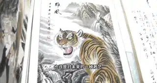
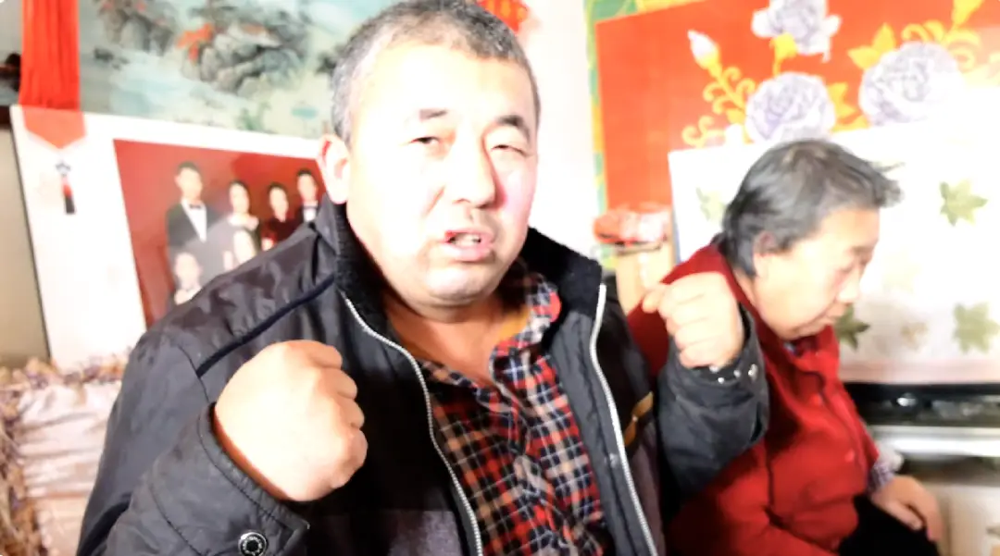
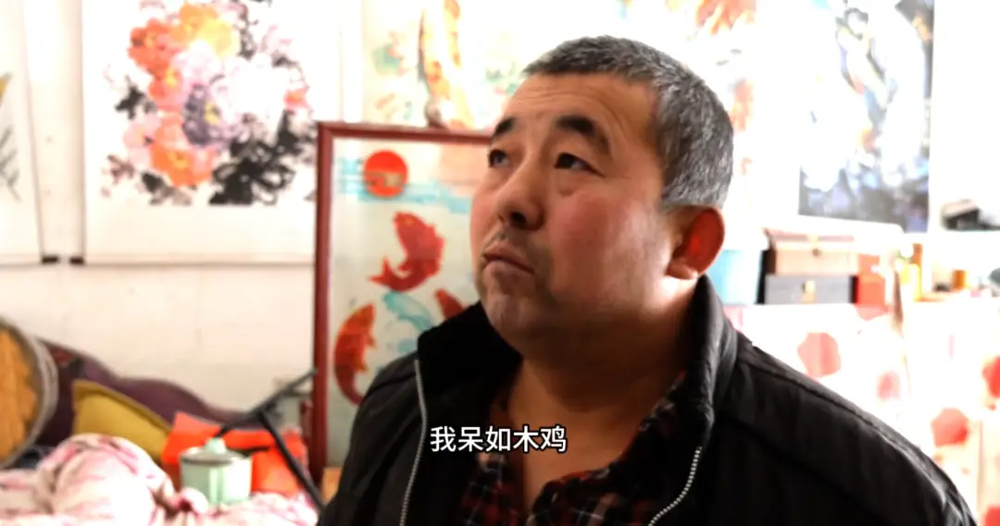
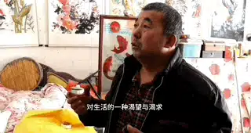
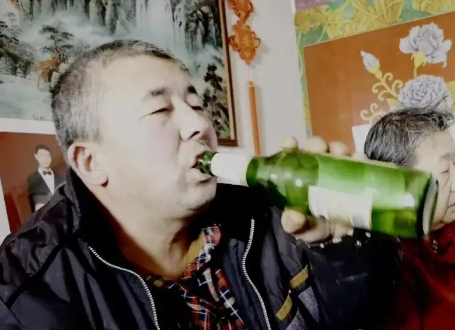
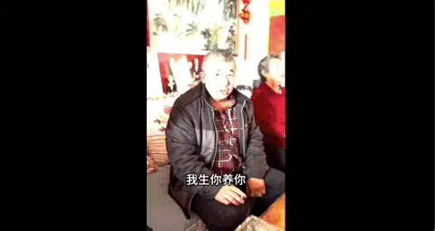
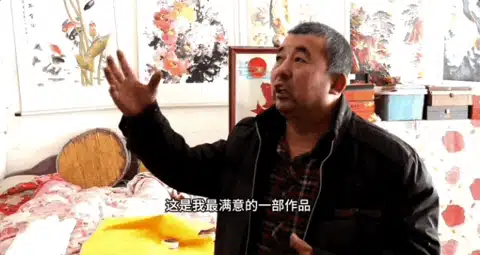

这是我制作的一部纪录片。
名字叫《神池李白18时》。
今年大年三十，我和弟弟用镜头对准我的二叔。
从大年三十中午12点，一直拍摄到初一凌晨5点多。
所以，片名里有了18时。
“李白”是我的二叔。

他从小在语文和绘画方面就有着非常好的天赋，但却非常偏科，数理化一塌糊涂。
最终他放弃中考，成为了我们县城芸芸众生的受苦人。
而未考入大学，也成为了二叔的遗憾。
二叔的主业是帮人刷家，靠着这个工作供养出了一儿一女，非常不容易。
但即使这样，他并未放弃自己的兴趣。

在他过去几十年里，一直在坚持写作和绘画。
我记得在我小学的时候，我找他玩，他就在院子里练习书法。
为了省钱，他并没有用墨水，而是用水在院子里的台阶上写字。
从左写到右，太阳晒干了左边，然后再回到左边继续写。
这个画面定义了我对勤劳和坚持的理解。
更有趣的是，二叔是一个充满童心和好奇心的人，一直保持着学习。
看电影、画画、写小说，甚至打游戏，什么也没有落下。
苦重的工作、家庭的责任和对艺术的追求，已经融为一体。
成为了他生活的日常，也让他对人生和艺术有很多很有见地的朴素认知。

不过，二叔性格内向不善言辞。
大年三十，在酒精的催化下，二叔的才气喷涌而出。

在春节这个特殊的时刻，我们以时间为工具来表现二叔。
18个小时二叔的不同状态和生活，浓缩了二叔的反差人生。
纪录片分成了三段。
第一段，是狂放不羁、脑洞大开的发言。

第二段，是在他的神秘“车库”中，探讨艺术和人生。
第三段，是在全国人民看春晚的时候，二叔通宵出街捡纸片，添补家用。
18个小时，三段情节，伴随着的是二叔从酒醉状态再到清醒的过程。
他的言谈举止起初让人哭笑不得，后来又让人忍不住惊叹他的才华。

最后酒醒，二叔的话语表达再次变得木讷，但是现实生活的他充满了行动和勤劳。
这就是18个小时呈现出来的故事。
剪辑不做任何美化，我们也不讲究画面的精致，也不进行调色。
用时间去呈现变化，并在这个过程中让二叔的人物形象变得自然饱满。
整个故事就像是从大家的手机中走出来的。
一切都是那么的真实，就像二叔每天面对的生活。
遗憾中有叹息，也有不断的坚持。
生活中有重担，也时常伴随着幽默和游戏人间的坦然。
整个拍摄和剪辑的过程，我自己体会到了当年意大利新现实主义扛着相机就上街的兴奋。
电影，也许很简单。
只要你对准的是真实的、言之有物、有血有肉的生活。
一切都会变得那么顺其自然，因为艺术来自于生活。
希望这部纪录片能给带给大家欢乐、感动和思考。
-END-
推荐阅读
▼
（点击文字即可获取全文）
即使看了那么多港片，没有这一部，依旧难懂香港
这里没有挑逗你眼目情欲的小鲜肉
也没有挑动你肉体情欲的段子
更没有膨胀你今生骄傲的鸡血
我们只在乎那些最质朴真诚的作品
在那里我们才能恢复真正的想象力
我们也坚信这才是我们真正需要的

ID:Six_hundred_hits
长按二维码，一键关注
【六百击】
-END-
电影评论
尽情分享朋友圈